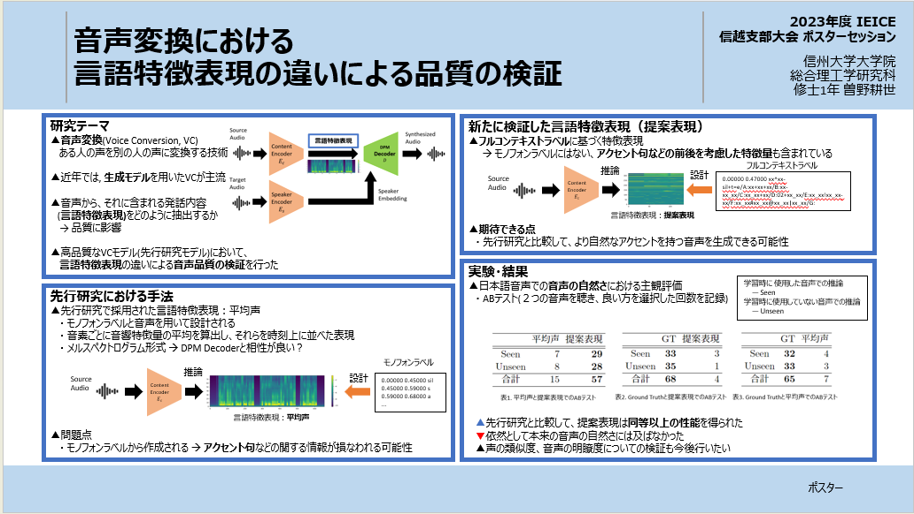

音声変換における言語特徴表現の近いによる品質の検証 デモページ
2023年度 IEICE 信越支部大会 ポスターセッション
ポスタースライド
One-shot Many-to-Many Voice Conversion (SEEN speaker)
学習に使用した話者―→学習に使用した話者への音声変換のサンプル(JVSコーパス).
| Source | Target | 平均声 | 提案手法 | |
|---|---|---|---|---|
| ケース1 | ||||
| ケース2 | ||||
| ケース3 | ||||
| ケース4 |
One-shot Any-to-Any Voice Conversion (UNSEEN speaker)
学習に使用していない話者―→学習に使用していない話者への音声変換のサンプル(JVSコーパス)
| Source | Target | 平均声 | 提案手法 | |
|---|---|---|---|---|
| ケース1 | ||||
| ケース2 | ||||
| ケース3 | ||||
| ケース4 |